Instrucciones estáticas¶
Existen diversas instrucciones que nos permiten modificar el mundo con los procesadores estáticos, aquí hay algunas.
Get Block¶
Te permite obtener información en cierta posición, similar al getBlock usado con las unidades pero este no tiene un rango limitado y no depende de una unidad.
floor: Te permite obtener el tipo de casilla.ore: Te permite obtener el tipo de mineral.block: Te permite obtener el tipo de bloque en la posición.building: Te permite obtener la construcción en la posición, con todos sus datos.
Set Block¶
Te permite poner bloques en cierta posición.
floor: Te permite poner un tipo de casilla en la posición.ore: Te permite poner un tipo de mineral en la casilla.building: Te permite poner una construcción en la casilla, con un equipo y rotación.
Spawn Unit¶
Te permite hacer aparecer unidades en cierta posición.
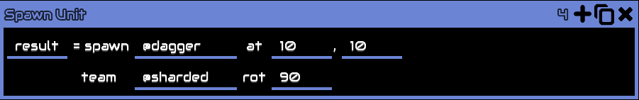
resultes el nombre de la variable que tendrá la unidad que hagas aparecer, es similar a la variable integrada@unitque se genera usandounitBind, puedes usar esta variable para hacer distintas cosas, como establecer estados alterados, obtener su posición o cualquier otra cosa.spawnes el tipo de unidad que deseas hacer aparecer.ates el par de posicionesx yen las cuales la unidad aparecerá.teames el equipo al que pertenecerá la unidad.rotes la rotación que tendrá la unidad, medida en grados.
Nota: Hay entidades en el juego que son consideradas como unidades, como lo son los misiles de las unidades en erekir, estos y las unidades ocultas pueden ser aparecidas con este comando.
* scathe-missile ahora tiene 3 variantes scathe-missile scathe-missile-surge y scathe-missile-phase.
Apply Status¶
Te permite aplicar o quitar un estado alterado a una unidad.
Nota: Existen estados alterados no listados (unarmed) que evita que la unidad ataque es uno de ellos, solo puede usarse escribiendo el código manualmente.
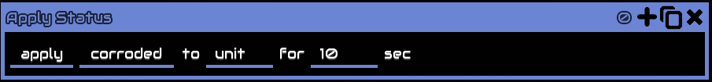
applypermitirá establecer un estado alterado.corrodedes el menú de selección del estado alterado a aplicar.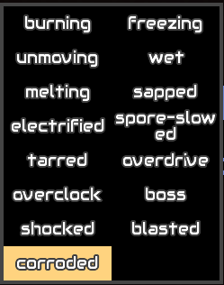
toes la referencia a la unidad a la cual aplicar el estado, podrías usar la referencia que generóSpawn Unito alguna otra.fores la cantidad de segundos que durará el estado alterado.
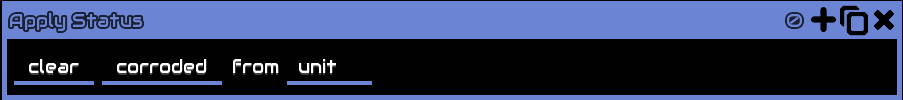
clearremoverá todos los estados alterados.fromes la referencia a la unidad a la cual se le removerán los estados alterados.
Weather Sense¶
Te permite detectar si el clima seleccionado se encuentra activo en el mapa.
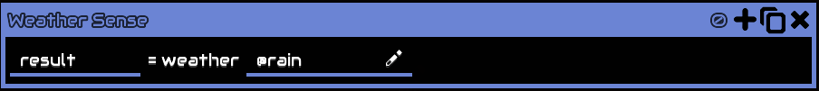
resultserá 1 si el clima se encuentra activo, 0 en cualquier otro caso.weatheres el tipo de clima.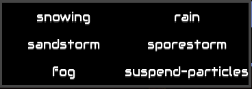
snowingnevando.rainlluvia.sandstormtormenta de arena.sporestormtormenta de esporas.fogniebla.suspend-particlespartículas suspendidas.
Weather Set¶
Te permite establecer un clima determinado en el mapa.
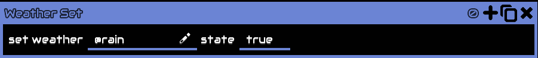
set weatheres la lista de climas que pueden aplicarse.statees el booleano que decide si el clima estará activo o no.
Spawn Wave¶
Te permite aparecer una oleada en el mapa en cierta posición.
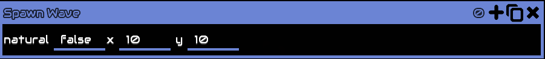
naturales el booleano que decide si la oleada es natural o no, si la oleada no es natural esta no incrementará el contador de oleadas y no podrás decidir en que posición esta aparecerá.x yson el par de coordenadas usadas para aparecer la oleada solo sinaturales falso.
Set Rule¶
Te permite establecer o cambiar una regla de la partida.
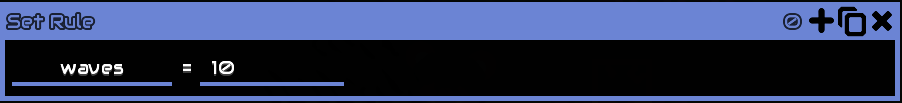
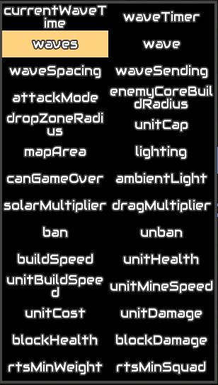
La mayoría de estas reglas tienen una descripción dentro del juego que aparece al poner el mouse encima de ellas o dejar apretado el dedo en móviles y solo se explicarán las que tienen más detalles o no cuentan con ella (si quieren una en especifico pídanla).
mapAreapermite modificar el área del mapa en la cual se puede jugar, todo bloque fuera de ella se inactivará inmediatamente además de que las unidades no podrían pasar de ese borde,xyson el punto inicial desde donde inicia la zona,w/widthes el ancho de la zona, o cuanto se extiende desde el puntoxa la derecha yh/heightes el largo de la zona, o cuanto se extiende desdeyhacia arriba.canGameOvervalor booleano que dice si se puede o no perder en el mapa, ya sea perdiendo todos tus núcleos o destruyendo los enemigos, esta regla puede evitarlo.
Flush Message¶
Te permite mostrar un mensaje en la pantalla usando el texto almacenado en la cola/buffer de texto.
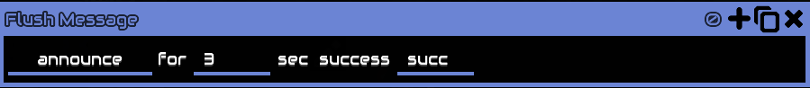
announcees la lista de tipos de formato para mostrar el mensaje.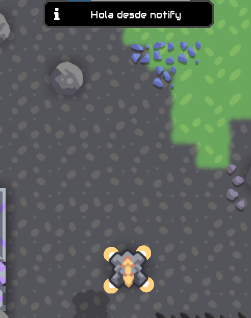
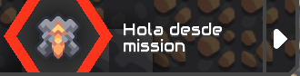
fores la cantidad de segundos que se mostrará el mensaje en pantalla.succeses el nombre de la variable booleana que indicará si este mensaje fue mostrado con éxito, anteriormente estas instrucciones esperaban a que finalizara el mensaje anterior, ahora si no está la oportunidad son saltadas, ese es el por que de la instrucción ya que ahora tu tendrás que configurar el código para evitar errores.
Cutscene¶
Te permite crear una cinemática, mientras esté activa el jugador no podrá moverse o realizar acciones.
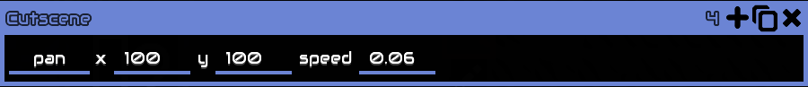
panes la lista de acciones a realizarpanse moverá a las coordenadasxyespecificadas a una cierta velocidad.zoomhará zoom en la posición de la cámara actual, el zoom va del0al1.stopdetendrá la cinemática anterior.
Effect¶
Creará un efecto de partículas. Los campos que se mostrarán dependerán del efecto de partículas seleccionado.
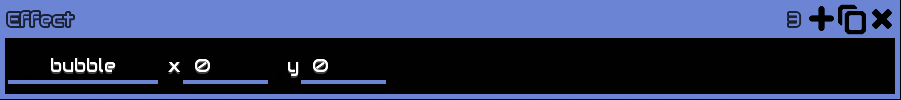
bubblees la lista desplegable de los efectos a usar, en el juego se ven de manera gráfica.xyson el par de coordenadas en las cuales el efecto se creará.sizeserá el tamaño del efecto.colores el color hexadecimal que tendrá la partícula, dentro del juego tienes un selector.rotationes la rotación en grados que tendrá el efecto.dataes el tipo de bloque a usar.
Explosion¶
Creará una explosión en una posición.
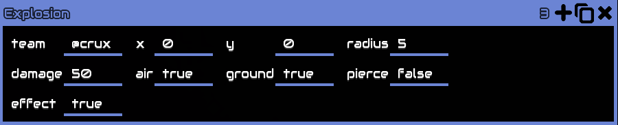
teames el equipo al que pertenece la explosión, a este equipo no le afectará la explosión y no recibirá daño.x yes el par de coordenadas en las cuales la explosión se realizará.radiuses el radio que tendrá la explosión.damagees el daño que realizará la explosión.aires un booleano que indicará si la explosión daña a unidades aéreas.groundes un booleano que indicará si la explosión daña a unidades terrestres o bloques.piercees un booleano que indicará si la explosión atraviesa bloques, si se establece enfalsesolo el bloque más cercano recibirá daño y este no se propagará.effectes un booleano que indicará si la explosión tiene un efecto visual, si se establece enfalsesolo se realizará el daño y no se verá gráficamente.
Set Rate¶
Establece la velocidad de ejecución de este procesador.
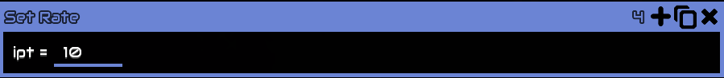
iptes la cantidad de instrucciones por tick que se realizarán. El límite máximo de instrucciones por tick es de 1000. Dando un total de 60000 instrucciones por segundo en condiciones perfectas.